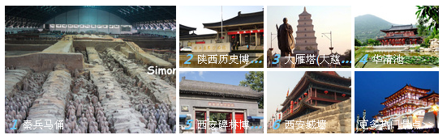

华清池
华清池是位于唐华清宫遗址之上的一座皇家宫苑，西距西安30公里，南依骊山，北面渭水。因其亘古不变的温泉资源、唐明皇与杨贵妃的爱情故事、西安事变发生地以及丰厚的人文历史资源而成为中国著名的文化旅游景区。华清池融人文历史和自然景观于一体，周、秦、汉、隋、唐等历代帝王在此修建离宫别苑。景区仿唐建筑大气恢宏，园林风光别具一格。主要有唐华清宫御汤遗址博物馆、西安事变旧址、九龙湖与芙蓉湖风景区、唐梨园遗址博物馆，有飞霜殿、昭阳殿、长生殿、环园和禹王殿等标志性建筑群，有体验皇家温泉的以澜汤殿、御汤苑、星辰苑、尚食苑、长汤苑、少阳苑、香凝阁和御膳阁为主的华清御汤（精品）酒店。
大雁塔
大雁塔（Great Wild Goose Pagoda），世界文化遗产、全国重点文物保护单位、国家AAAAA级旅游景区。位于西安市的大慈恩寺内，被视为古都西安和陕西省的象征。唐代永徽三年（公元652年），取经归来的玄奘法师为保存由天竺经丝绸之路带回长安的经卷佛像而修建。大雁塔作为现存最早、规模最大的唐代四方楼阁式砖塔，是佛塔这种印度佛寺的建筑形式随着佛教传播而传入中原地区并融入汉文化的典型物证，是凝聚了汉族劳动人民智慧结晶的标志性建筑，现存塔身七层，通高64.5米。
陕西历史博物
陕西历史博物馆位于西安大雁塔的西北侧，筹建于1983年，1991 年6月20日落成开放，是中国第一座大型现代化国家级博物馆，它的建成标志着中国博物馆事业迈入了新的发展里程。这座馆舍为“中央殿堂、四隅崇楼”的唐风建筑群，主次井然有序，高低错落有致，气势雄浑庄重，融民族传统、地方特色和时代精神于一体。馆区占地 65000平方米。建筑面积55600平方米，文物库区面积8000平方米，展厅面积11000平方米。馆藏文物多达 370000余件，上起远古人类初始阶段使用的简单石器，下至1840年前社会生活中的各类器物，时间跨度长达一百多万年。
秦兵马俑
秦始皇兵马俑坑位于西安市临潼区城东6公里的西杨村南，西距秦始皇帝陵1225米，是秦始皇陵园中最大的一组陪葬坑，坑中所埋藏的浩大俑群是秦王朝强大军队的缩影。
出土的各类陶俑，按照不同身份分为将军俑、军吏俑、武士俑等几个级别，其服饰、冠带、神姿各不相同，千姿百态，几千件俑没有一张相同的脸。充分体现了我国古代劳动人民的聪明智慧和中国古代文明史上的伟大创造，深受世界各国人民的喜爱，被誉为“世界第八大奇迹”、二十世纪考古史上最伟大发现，被联合国教科文组织列入世界文化遗产名录。
西安城墙
西安城墙（The Xi’an Circumvallation）位于陕西省西安市中心区，国家AAAA级景区，墙高12米，顶宽12-14米，底宽15-18米，轮廓呈封闭的长方形，周长13.74公里。城墙内人们习惯称为古城区，面积11.32平方公里，著名的西安钟鼓楼就位于古城区。
西安城墙于明洪武七年到十一年（1374-1378）在隋唐皇城的基础上建成，完全围绕“防御”战略体系，城墙的厚度大于高度，稳固如山，墙顶可以跑车和操练。从隋唐皇城算起，西安古城墙已经有 1400 多年的历史，从明初扩建府城算也已有600多年历史，是中国保存最完整的古代城垣建筑之一。
城墙有主城门四座：长乐门（东门），永宁门（南门），安定门（西门），安远门（北门），这四座城门也是古城墙的原有城门。从民国开始为方便出入古城区，先后新辟了数十座城门，至今西安城墙已有城门18座。